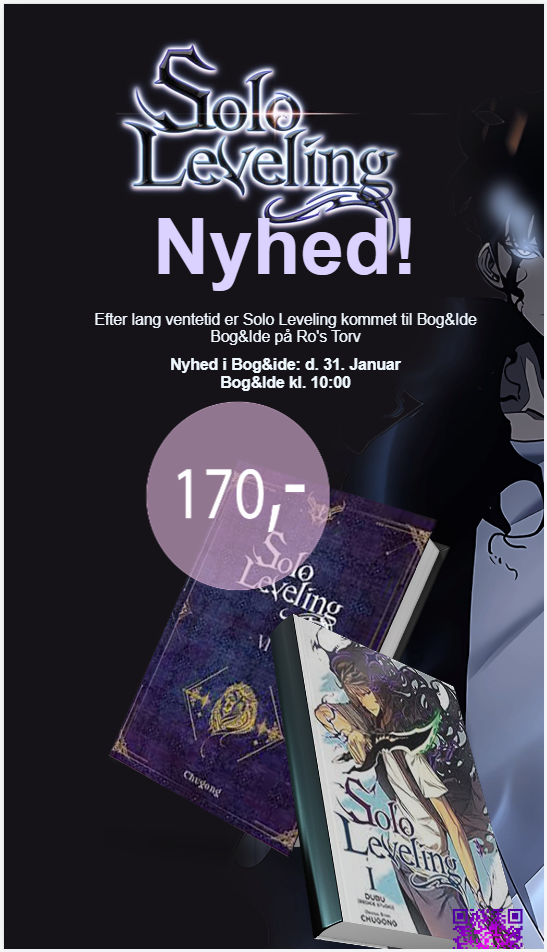
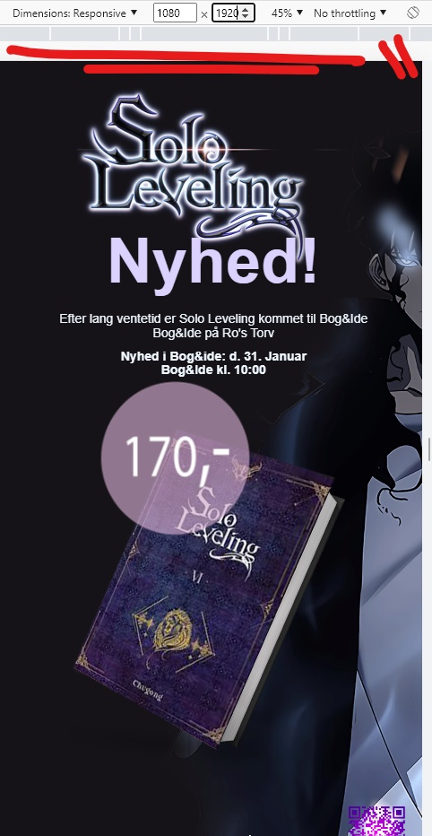

Live plakat
Made via. Visual Studio code.
The assingment was to make a Live plakat for a center called Ro's torv.
with the goal of having an Html and css droved live plakat.
It's a manga and book inspired called Solo leveling
the plakat can move and can be seen if you scan the Qr under the picture, its in the format 1080x1920. which means you will have to see it on a computerscreen.
folow these step to see it move correctly
1. tap on this link (https://live-plakat-tt.netlify.app/) on your computer
2. press right on your mouse and go all down and tap on "undersøg"(look at the picture under the final)
3. then change view settings to 1080x1920

